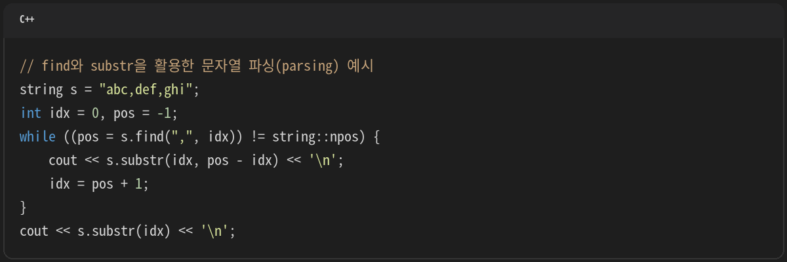
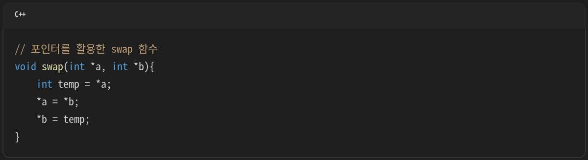
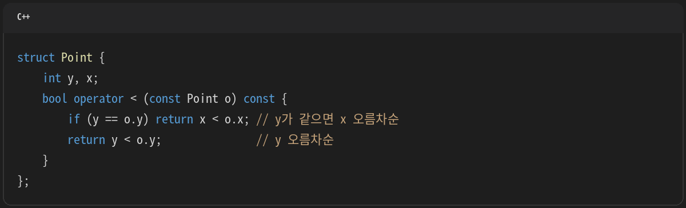

🚀 C++ 심화 핵심 정리 (문자열·함수·포인터·객체지향·정렬)
💡 한 줄 요약:char·string문자열 처리와 함수·포인터를 통한 메모리 제어부터struct·class기반의 객체지향(상속·다형성·캡슐화) 및 사용자 정의sort정렬까지 다룬 C++ 심화 핵심 노트
1. 문자와 문자열 (char, string)
- 문자(
char) 특징: 1바이트 크기의 문자 1개를 저장하며 홀따옴표(' ')로 감싸서 표현합니다. ASCII 코드표에 따라 고유 숫자와 대응되며, 정수나 다른char와+연산 시int로 자동 변환됩니다.(char)또는(int)로 형변환(type casting)하여 문자와 정수를 오갈 수 있습니다. - 문자열(
string) 특징: 쌍따옴표(" ")로 감싸 표현하며<string>헤더를 포함하는 것이 권장됩니다. 문자 배열처럼 인덱싱으로 각 글자에 접근·수정할 수 있고, 끝에는 항상 널 문자('\0')가 포함되며+연산자로 문자열 결합(concatenation)이 가능합니다. - 주요
string메서드:size(): 널 문자를 제외한 문자열 길이를 부호 없는 정수(size_t)로 반환하므로int와 연산할 때는(int)a.size()로 형변환하는 것이 안전합니다.substr(index, count):index위치부터count개(생략 시 끝까지)의 부분 문자열을 잘라 반환합니다.find("str", index):index부터"str"이 처음 등장하는 위치를 반환하며, 찾지 못하면string::npos를 반환합니다.
C++

C++ 코드
2. 함수 (Function)
- 구조와 동작:
반환자료형 함수명(매개변수)형태로 정의하며,return문을 만나면 반환값을 가지고 호출되었던 위치로 복귀합니다. 반환값이 없는 경우void를 사용합니다. - 지역 변수 vs 전역 변수:
- 지역 변수: 함수 내부나 매개변수로 선언되며 해당 함수 안에서만 유효하고 종료 시 사라집니다.
- 전역 변수: 함수 외부에 선언되어 모든 함수에서 접근 가능하며 변경 사항이 유지됩니다.
- 함수와 배열: 배열을 함수에 넘길 때는 배열 이름(첫 번째 요소의 메모리 주소)이 전달되므로 함수 내부에서 요소를 수정하면 원본 배열에도 반영됩니다. C++ 특성상 배열 자체를 직접 반환하는 함수는 만들 수 없습니다.
3. 포인터 (Pointer)
- 개념 및 활용 목적: 값이 아닌 메모리 주소 자체를 저장하고 다루는 변수로, 대용량 데이터를 복사 없이 전달하거나 원본 값을 직접 수정하고 연결리스트 같은 자료구조를 구현할 때 사용합니다.
- 핵심 연산자:
&(주소 연산자): 변수가 저장된 메모리 주소를 가져옵니다.- (역참조 연산자): 포인터가 가리키는 메모리 주소에 저장된 실제 값에 접근하거나 값을 변경합니다. 포인터의 자료형은 가리킬 변수의 자료형과 반드시 일치해야 합니다.
- 배열과 포인터: 배열의 이름 자체가 첫 번째 요소의 주소(포인터)이며,
(p + i)처럼 포인터 연산을 통해 연속된 메모리에 접근할 수 있습니다. - Call by Value vs Call by Reference:
- Call by Value: 값을 복사해서 전달하므로 원본 변수는 변하지 않습니다.
- Call by Reference: 메모리 주소(포인터)를 전달해 원본 값을 직접 수정하며, 함수가 여러 결과값을 변경·반환하는 효과를 낼 수 있습니다.
C++

C++ 코드
4. 구조체와 클래스 (struct, class)
- 사용자 정의 자료형 (
structvsclass): 여러 속성(변수)과 메서드(함수)를 하나로 묶어 관리하기 위해 사용하며, 정의 끝에는 반드시 세미콜론(;)을 붙입니다.
| 구분 | struct | class |
| 멤버 기본 접근 권한 | public (모두 공개) | private (비공개) |
| 기본 상속 방식 | public 상속 | private 상속 |
- 캡슐화(Encapsulation)와 접근 지정자:
public: 클래스 외부 어디서든 접근 가능합니다.protected: 해당 클래스와 상속받은 자식 클래스 내부에서만 접근 가능합니다.private: 해당 클래스 내부에서만 접근 가능하며, 외부에서 읽고 쓸 때는public으로 선언된getter와setter함수를 통해 제어합니다.
- 생성자(Constructor)와 상속(Inheritance):
- 생성자: 인스턴스 생성 시 멤버 변수를 초기화하는 함수입니다.
- 상속:
class 자식 : public 부모형태로 기존 클래스의 속성과 메서드를 물려받아 확장합니다.
- 다형성(Polymorphism)과 추상 클래스(Abstract Class):
- 오버로딩(Overloading): 같은 이름의 함수를 매개변수의 개수·타입·순서만 다르게 여러 개 정의하는 기법입니다. 자식 클래스에서 부모의 오버로딩된 함수를 모두 쓰려면
using 부모클래스::함수명;을 선언해야 합니다. - 오버라이딩(Overriding)과
virtual: 부모 클래스의 함수를 자식 클래스에서 재정의하는 것으로, 포인터로 다룰 때도 실제 객체의 함수가 실행되려면 부모 함수에virtual을, 자식 함수에override를 명시해야 합니다. - 추상 클래스:
virtual void grade() const = 0;처럼 순수 가상 함수를 하나 이상 포함한 클래스로, 직접 인스턴스를 생성할 수 없으며 자식 클래스에서 반드시 해당 함수를 오버라이딩해야 합니다.
- 오버로딩(Overloading): 같은 이름의 함수를 매개변수의 개수·타입·순서만 다르게 여러 개 정의하는 기법입니다. 자식 클래스에서 부모의 오버로딩된 함수를 모두 쓰려면
5. 정렬 (sort)
- 기본 배열 정렬:
<algorithm>헤더를 포함하고sort(시작주소, 끝주소)형태로 호출합니다.- 오름차순(기본):
sort(arr, arr + 5); - 내림차순:
sort(arr, arr + 5, greater<int>());
- 오름차순(기본):
- 구조체 / 클래스 사용자 정의 정렬: 기본 비교 기준(
<)이 없으므로 아래 두 가지 방법 중 하나를 구현해야 합니다.- 비교 함수(
cmp) 전달:bool cmp(Point a, Point b)함수를 정의하여sort(points, points + 4, cmp);의 세 번째 인자로 넘깁니다. <연산자 오버로딩: 구조체/클래스 내부에bool operator < (const Point o) const를 정의하여 기본sort(points, points + 4);로 정렬되도록 만듭니다.
- 비교 함수(
C++

C++ 코드